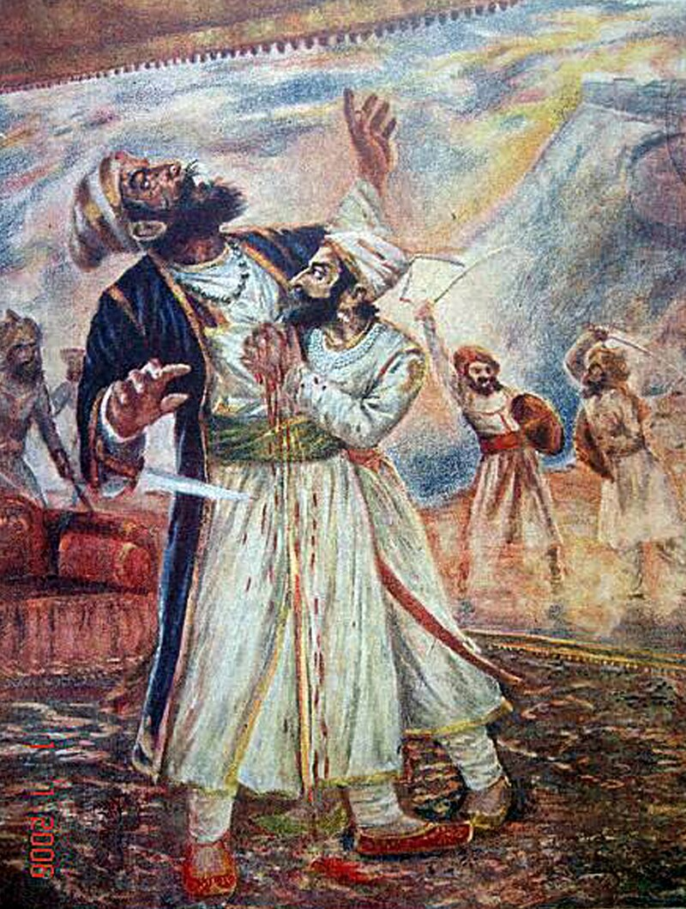

Shivaji Shahaji Bhonsale
1630 - 1680
Shivaji Shahaji Bhonsale
Shivaji Shahaji Bhonsale Shivaji I (Shivaji Shahaji Bhonsale;
Marathi pronunciation: [d͡ʒiˑ bʱoˑs(ə)leˑ]; c.19 February 1630 3
April 1680[5]) was an Indian ruler and a member of the Bhonsle
Maratha clan.[6] Shivaji carved out his own independent kingdom from
the declining Adilshahi Sultanate of Bijapur that formed the genesis
of the Maratha Empire. In 1674, he was formally crowned the Shivaji
Shahaji Bhonsale of his realm at Raigad Fort.[7]
Biographies
19 February 1630 Shivneri Fort, Ahmadnagar Sultanate (present-day
Maharashtra, India)
3 April 1680 (aged 50) Raigad Fort, Mahad, Maratha Empire
(present-day Maharashtra, India)
Sai Bhonsale(m. 1640; died 1659)Soyaraba(m. 1650) Putalabai(m.
1653)Sakvarba(m. 1656)
8,[4] including Sambhaji and Rajaram I
Shivaji. Shahaji died around 1664 -1665 in a hunting accident
In 1646, 16-year-old Shivaji captured the
Siddi Jauhar and handed over the fort on 22 September 1660,
withdrawing to Vishalgad;
Shivaji would retake Panhala in 1673.
Shivaji Shahaji Bhonsal
Wikipedia.
Combat with Afzal Khan

The Bijapur sultanate was displeased with their losses to Shivaji's
forces, with their vassal Shahaji disavowing his son's actions.
After a peace treaty with the Mughals, and the general acceptance of
the young Ali Adil Shah II as the sultan, the Bijapur government
became more stable, and turned its attention towards Shivaji.[42] In
1657, the sultan, or more likely his mother and regent, sent Afzal
Khan, a veteran general, to arrest Shivaji. Before engaging him, the
Bijapuri forces desecrated the Tulja Bhavani Temple, a holy site for
Shivaji's family, and the Vithoba temple at Pandharpur, a major
pilgrimage site for Hindus.[43][44][45] Pursued by Bijapuri forces,
Shivaji retreated to Pratapgad fort, where many of his colleagues
pressed him to surrender.[46] The two forces found themselves at a
stalemate, with Shivaji unable to break the siege, while Afzal Khan,
having a powerful cavalry but lacking siege equipment, was unable to
take the fort. After two months, Afzal Khan sent an envoy to Shivaji
suggesting the two leaders meet in private, outside the fort, for
negotiations.[47][48]